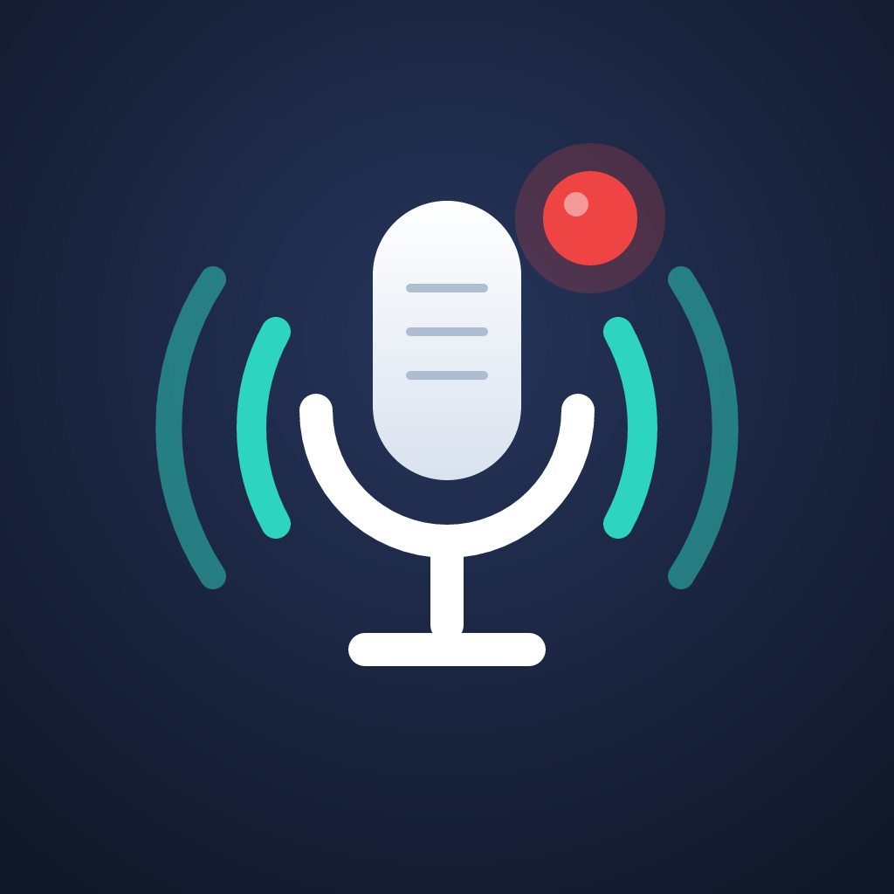

Règles de confidentialité
Dernière mise à jour : 14 octobre 2026
Meeting recorder est un bot Discord auto-hébergé qui organise des réunions, les enregistre avec l'accord des participants et en publie un compte rendu. Ce document décrit les données qu'il traite, en particulier lorsqu'un serveur Discord le connecte à un stockage en ligne (Google Drive, OneDrive ou Dropbox).
Qui traite les données
Chaque installation du bot est exploitée par une personne ou une association (« l'opérateur ») sur sa propre machine. Les données restent sur cette machine et dans les services que les administrateurs de chaque serveur Discord choisissent de connecter. Le code est public : https://github.com/powange/meeting-recorder
Données traitées
- Réunions : titre, date, ordre du jour, réponses des membres, données saisies dans Discord.
- Enregistrements : la voix des participants, uniquement pendant une réunion enregistrée et pour les personnes qui n'ont pas refusé l'enregistrement. Les personnes qui le refusent ne sont jamais enregistrées.
- Transcriptions et comptes rendus produits à partir de ces enregistrements.
- Identifiants Discord (identifiant et nom affiché) des participants.
- Accès au stockage connecté : jetons OAuth chiffrés (AES-256-GCM, clé
APP_SECRET_KEYde l'opérateur ; sans cette clé, la connexion d'un stockage n'est pas proposée), et adresse ou nom du compte connecté, affiché aux administrateurs du serveur.
Utilisation des données Google (et des autres stockages)
Lorsqu'un administrateur connecte un Google Drive, le bot demande uniquement la portée https://www.googleapis.com/auth/drive.file. Il ne peut donc voir et modifier que les fichiers et dossiers qu'il a lui-même créés. Il n'a pas accès aux autres fichiers du Drive.
Le bot s'en sert pour une seule chose : déposer, dans un dossier par réunion, le compte rendu, la transcription et l'audio de chaque réunion de ce serveur Discord, et les remplacer quand ils sont mis à jour. Il ne lit, n'analyse et ne partage aucun autre contenu.
Il en va de même pour Dropbox, limité au dossier Applications/<nom de l'application>, et pour OneDrive, où le bot n'écrit que dans son propre dossier.
L'utilisation des informations reçues des API Google respecte la politique relative aux données utilisateur des services d'API Google, y compris les exigences d'utilisation limitée. Les données ne sont ni vendues, ni utilisées à des fins publicitaires, ni utilisées pour entraîner des modèles d'IA.
Partage
Les données ne sont transmises qu'aux services choisis par l'opérateur ou par les administrateurs du serveur :
- Discord, pour la publication dans le serveur ;
- les serveurs de transcription et de résumé configurés par l'opérateur, en général sur ses propres machines ;
- le stockage connecté par le serveur Discord.
Conservation et suppression
- Les fichiers audio locaux sont supprimés automatiquement après la durée de conservation réglée par l'opérateur.
- Un administrateur peut déconnecter le stockage à tout moment dans
/config→ Stockage : l'accès est révoqué chez Google et Dropbox (Microsoft ne le permet pas à une application : voir ci-dessous), puis les jetons sont effacés. Les fichiers déjà copiés restent dans le stockage, où leur propriétaire peut les supprimer. - Quand le bot est retiré d'un serveur, l'accès au stockage est révoqué aussitôt, et toutes les données du serveur (réunions, transcriptions, comptes rendus, fichiers audio, réglages) sont supprimées 30 jours plus tard, sauf si le bot y revient entre-temps.
- L'accès peut aussi être retiré depuis le compte concerné : https://myaccount.google.com/permissions pour Google, https://account.microsoft.com/privacy/app-access pour Microsoft, et les paramètres « Applications connectées » pour Dropbox.
Contact
Pour toute question, ouvrez une demande sur https://github.com/powange/meeting-recorder/issues ou contactez l'opérateur du bot dans votre serveur Discord.